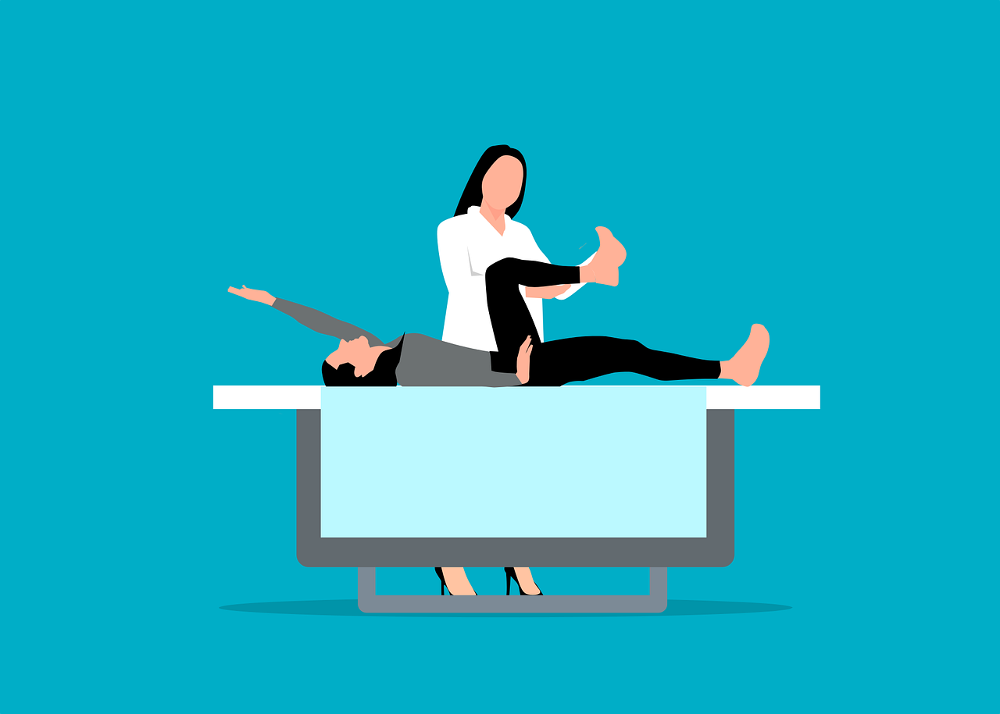
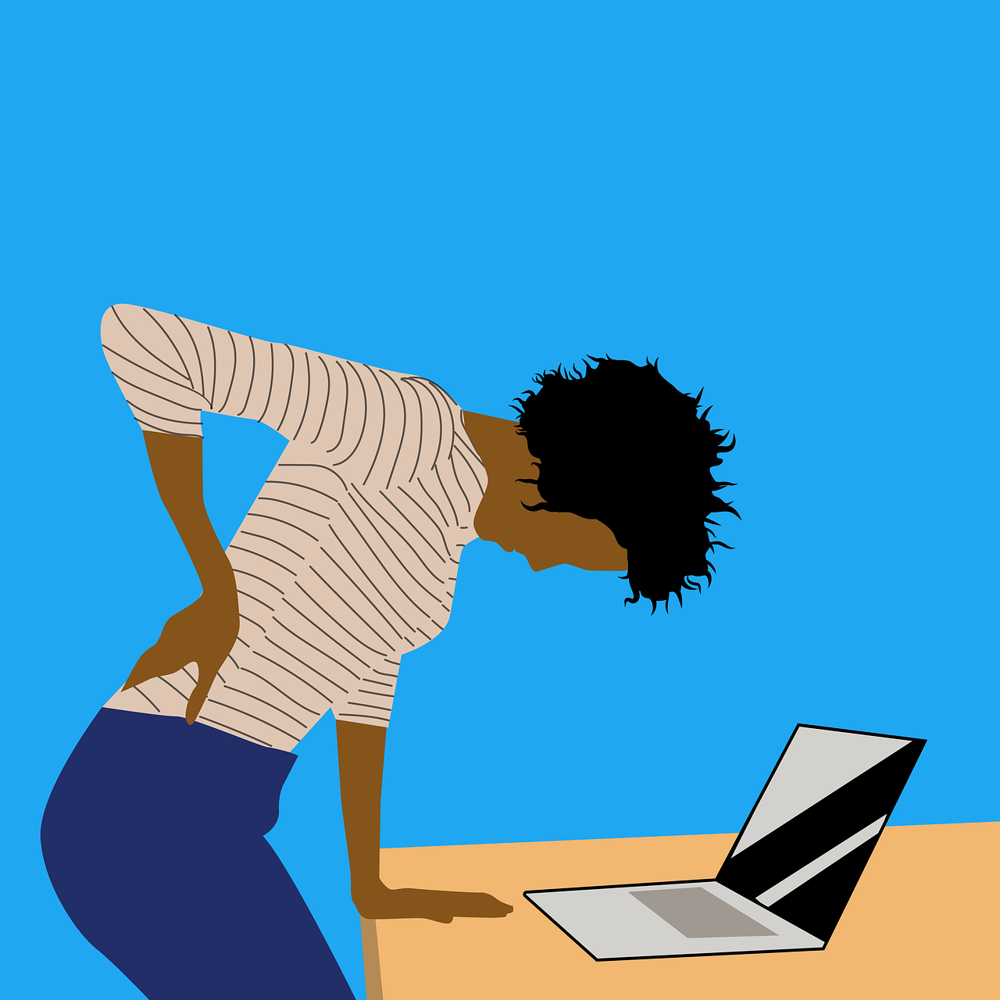

La Rehabilitación Física.
¿Qué es la Rehabilitación Física?

La Rehabilitación Física es la disciplina que se encarga de sanar
y recuperar al máximo todas las capacidades motrices de un
individuo que ha sido afectado por una lesión o enfermedad. Todo
esto con el objetivo de que este pueda reintegrarse a sus
actividades rutinarias y pueda ser autónomo.
Tipos de Rehabilitación Física
Existen categorías secundarias que permiten ocuparse de diversas
condiciones físicas de una manera más eficiente y apropiada para
el paciente. A continuación, te hablaremos de algunas de estas:

-
Neurológica:
Enfermedades y condiciones neurológicas desfavorables conducen
a la debilidad muscular extrema. Al punto de imposibilitar el
balance o la coordinación.
-
Musculoesquelética:
Trata sobre la recuperación o reparación de las deformidades o
dolencias relacionadas con el sistema musculoesquelético del
ser humano.
-
Cardiopulmonar:
Se especializa en el tratamiento de enfermedades que tienen
que ver con Desórdenes Cardiopulmonares, tales como los Fallos
Cardiacos y las Obstrucciones Pulmonares Crónicas.
-
Pediátrica:
Esta se enfoca en ayudar a reparar y sanar daños agudos o
defectos que se presentan en infantes a la hora del nacimiento
o en su desarrollo, por ejemplo: el crecimiento demorado y
defectos genéticos relacionados con la psiquis cerebral y el
movimiento, tales como la Parálisis.
¿Cuándo asistir a Rehabilitación Física?
Todas las personas cuyo ritmo de vida laboral les demande pasar
mucho tiempo sentados frente a una computadora, son candidatos
potenciales.

Las posturas forzadas provocan lesiones por repetición. Esto
quiere decir que por pasarse un día entero sentado, lo más
probable es que no sufran consecuencias de nada, en cambio,
después de meses o incluso semanas, muy probablemente comenzarán a
presentar molestias. De igual manera, si el paciente fue sometido
anteriormente en alguna cirugía o alguna Reconstrucción Avanzada.